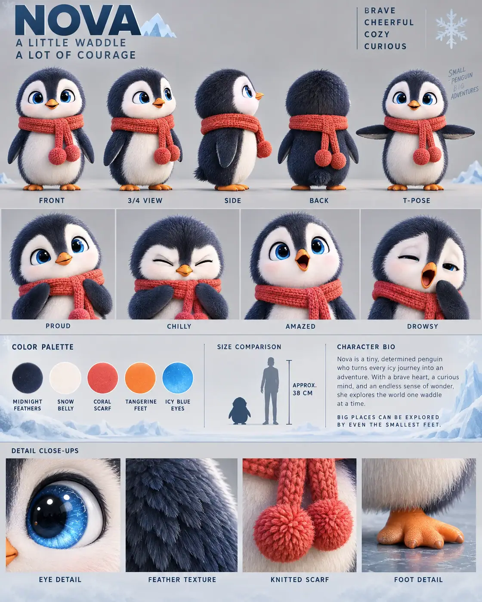

#93 of 100
Nova
Baby penguin
Birds & SkyA LITTLE WADDLEA LOT OF COURAGE
- Species
- Baby penguin
- Collection
- Birds & Sky
- Height
- 38 CM
- Personality
- BRAVECHEERFULCOZYCURIOUS
- Colour palette
- MIDNIGHT FEATHERSSNOW BELLYCORAL SCARFTANGERINE FEETICY BLUE EYES
- Expressions
- proud scarf-adjusting smile
- chilly scrunched-up face
- amazed open-beak expression
- drowsy eyes with a tiny yawn
- Detail panels
- EYE DETAIL
- FEATHER TEXTURE
- KNITTED SCARF
- FOOT DETAIL
- Character note
- Nova — a tiny, determined penguin who turns every icy journey into an adventure
Reference sheet prompt
Cute baby penguin named NOVA, with oversized sapphire-blue eyes, a rounded pear-shaped body, midnight-blue feathers, a soft white face and belly, tiny orange feet, small flipper wings, and an oversized coral-red knitted scarf with two dangling pom-poms. A brave little explorer from the ice fields high-end 3D animated feature character reference sheet, original character design, polished cinematic family-animation aesthetic, portrait 4:5 presentation board, precise professional model-sheet grid, top-left header reading “NOVA” with the tagline “A LITTLE WADDLE / A LOT OF COURAGE,” four personality traits in the top-right corner reading “BRAVE / CHEERFUL / COZY / CURIOUS” full-body turnaround in the top section — exactly five evenly spaced views: front / 3-4 / side / back / T-pose, scarf and pom-poms identical in every view, exact same body proportions and foot placement, clean pose labels beneath each view row of 4 bust-length facial expressions: proud scarf-adjusting smile, chilly scrunched-up face, amazed open-beak expression, drowsy eyes with a tiny yawn, expressive brow and beak shapes color palette swatches with clean uppercase labels: MIDNIGHT FEATHERS, SNOW BELLY, CORAL SCARF, TANGERINE FEET, ICY BLUE EYES neutral warm-grey studio background with subtle Antarctic habitat accents: faint blue-white ice forms, soft snowdrift silhouettes, delicate frost patterns, and restrained cool-blue reflections in the bio panel and detail strip, main character area remaining clean grey, thin section dividers, soft cinematic 3-point lighting middle information band containing the color swatches, a small penguin silhouette beside a human height comparison, approximate height label “APPROX. 38 CM,” and a short readable character bio describing Nova as a tiny, determined penguin who turns every icy journey into an adventure bottom row of exactly 4 macro detail panels labeled EYE DETAIL, FEATHER TEXTURE, KNITTED SCARF, FOOT DETAIL, showing the glossy blue eye, soft layered feather surface, visible yarn fibers and pom-pom stitching, and tiny orange webbed feet 8k render, consistent model-sheet proportions, smooth velvety feather texture, rounded head, short stubby legs, small flipper wings, clean editorial typography, no extra characters, no duplicate poses, no melted feet, no random winter scenery, no logos